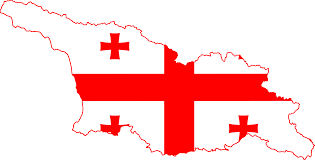
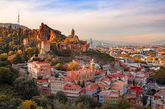
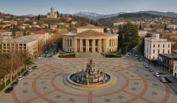
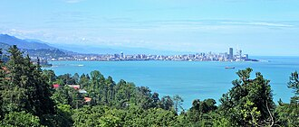
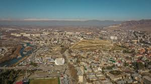

საქართველოს ქალაქები
საქართველოში მრავალი მნიშვნელოვანი ქალაქია, რომლებიც განსხვავდებიან ისტორიით, კულტურითა და ბუნებით.
თბილისი
დედაქალაქი და მუნიციპალიტეტი საქართველოში; 1922-1936 წლებში ერთდროულად იყო ამიერკავკასიის სფსრ დედაქალაქი; მდებარეობს აღმოსავლეთ საქართველოში, თბილისის ქვაბულში, მდინარე მტკვრის ორივე სანაპიროზე, ზღვის დონიდან 380-600 მ სიმაღლეზე, ჩრდილოეთით ესაზღვრება საგურამოს ქედის სამხრეთი მთისწინეთი, აღმოსავლეთით — ივრის ზეგნის ჩრდილო-დასავლეთი მონაკვეთი, დასავლეთით და სამხრეთით კი — თრიალეთის ქედის განშტოებები. ქალაქს 502 კმ² ფართობი უჭირავს და 1,152 მილიონზე მეტი მცხოვრები ჰყავს.
ქუთაისი
უძველესი ქალაქი, და მუნიციპალიტეტი საქართველოში, იმერეთის მხარის ადმინისტრაციული ცენტრი, მოსახლეობით მეოთხე და ფართობით მესამე ქალაქი საქართველოში, საქართველოს სამეფოს ისტორიული დედაქალაქი, ქუთაისის საეპისკოპოსოს ისტორიული ცენტრი. მდებარეობს მდინარე რიონზე. მოსახლეობა 123 700 ადამიანი (2025).
ბათუმი
ქალაქი და მუნიციპალიტეტი საქართველოში, არის აჭარის ავტონომიური რესპუბლიკის ადმინისტრაციული ცენტრი. ბათუმი არის მოსახლეობის რაოდენობით მეორე ქალაქი საქართველოში და ყველაზე დიდი ქალაქი დასავლეთ საქართველოში, მსხვილი საერთაშორისო ნავსადგური შავი ზღვის სამხრეთ-აღმოსავლეთ სანაპიროზე, მნიშვნელოვანი სამრეწველო, კულტურული და ტურისტული ცენტრი.ბათუმი გაშენებულია ღრმა, კარგად დაცული ბუნებრივი ნავსაყუდელის ბათუმის ყურის ნაპირას, ზღვის დონიდან 3 მეტრზე, თბილისიდან 350 კმ-ში.
გორი
ქალაქი საქართველოში, შიდა ქართლის მხარეში, გორის მუნიციპალიტეტისა და შიდა ქართლის მხარის ადმინისტრაციული ცენტრი. მდებარეობს მდინარეების მტკვრისა და ლიახვის შესართავთან, ძირითად სატრანსპორტო გზების გზასაყარზე, თბილისიდან 76 კილომეტრში. ქალაქში არის მსუბუქი და კვების მრეწველობის საწარმოები, ჯანდაცვის, განათლებისა და კულტურის დაწესებულებები. გორში არის სამთავისისა და გორის ეპარქიის კათედრა და რეზიდენცია.